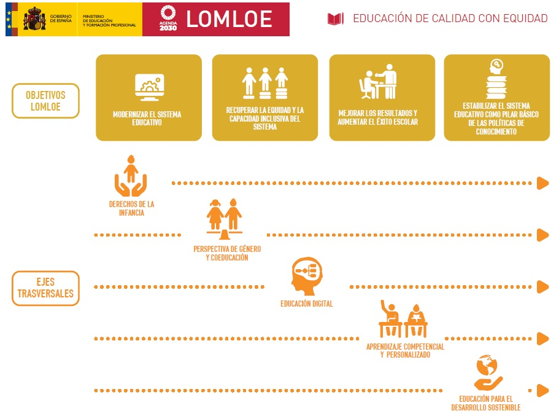

La Ley Orgánica 3/2020, de 29 de diciembre, por la que se modifica la Ley Orgánica 2/2006, de 3 de mayo, de Educación, ha introducido cambios que afectan a todas las etapas educativas adoptando:

- Un enfoque de igualdad de género a través de la coeducación y fomentando el aprendizaje de la igualdad efectiva de mujeres y hombres, la prevención de la violencia de género y el respeto a la diversidad afectivo-sexual, introduciendo en educación secundaria la orientación educativa y profesional del alumnado con perspectiva inclusiva y no sexista.
- Un enfoque transversal orientado a que todo el alumnado tenga garantías de éxito en la educación por medio de una dinámica de mejora continua de los centros educativos y una mayor personalización del aprendizaje.
- La importancia de atender al desarrollo sostenible de acuerdo con lo establecido en la Agenda 2030 proponiendo la incardinación de estos objetivos en los planes y programas educativos de la totalidad de la enseñanza obligatoria, incorporando los conocimientos, capacidades, valores y actitudes que necesitan todas las personas para vivir una vida fructífera, a, adoptar decisiones fundamentadas y asumir un papel activo –tanto en el ámbito local como mundial– a la hora de afrontar y resolver los problemas comunes a todos los ciudadanos del mundo.
- Esta educación para el desarrollo sostenible y para la ciudadanía mundial que se menciona en el punto anterior incluye la educación para la paz y los derechos humanos, la comprensión internacional y la educación intercultural, así como la educación para la transición ecológica, sin descuidar la acción local.
- La necesidad de responder al cambio digital que se está produciendo en nuestras sociedades y que forzosamente afecta a la actividad educativa. El desarrollo de la competencia digital no supone solamente el dominio de los diferentes dispositivos y aplicaciones si no que debe asumirse que en él nuestros jóvenes, independientemente de su edad, aprenden, se relacionan, consumen, disfrutan de su tiempo libre. De ahí que la norma persiga un cambio digital en el proceso de enseñanza-aprendizaje incluyendo la atención al desarrollo de la competencia digital de los y las estudiantes de todas las etapas educativas, tanto a través de contenidos específicos como en una perspectiva transversal, y haciendo hincapié en la brecha digital de género.
Estos principios básico recogidos en el texto de la Ley Orgánica 3/2020, de 29 de diciembre, son los que cimientan todas las actividades y materiales que integran el proyecto ComunicA STEAM elaborado por Pedro J. Ramón Torregrosa y que persiguen principalmente el desarrollo de la competencia lingüística desde la materias del ámbito STEAM y, de forma secundaria, el resto de competencias prestando especial atención a las competencias digital y STEM.
Así debemos tener en cuenta que al final de la Enseñanza Obligatoria el alumnado deberá haber conseguido desarrollar estas competencias en los siguientes términos:
| Competencia Lingüística | Competencia Matemática y STEM | Competencia Digital |
| CCL1. Se expresa de forma oral, escrita, signada o multimodal con coherencia, corrección y adecuación a los diferentes contextos sociales, y participa en interacciones comunicativas con actitud cooperativa y respetuosa tanto para intercambiar información, crear conocimiento y transmitir opiniones, como para construir vínculos personales. | STEM1. Utiliza métodos inductivos y deductivos propios del razonamiento matemático en situaciones conocidas y selecciona y emplea diferentes estrategias para resolver problemas analizando críticamente las soluciones y reformulando el procedimiento, si fuera necesario. | CD1. Realiza búsquedas en internet atendiendo a criterios de validez, calidad, actualidad y fiabilidad, seleccionando los resultados de manera crítica y archivándolos, para recuperarlos, referenciarlos y reutilizarlos, respetando la propiedad intelectual. |
| CCL2. Comprende, interpreta y valora con actitud crítica textos orales, escritos, signados o multimodales de los ámbitos personal, social, educativo y profesional para participar en diferentes contextos de manera activa e informada y para construir conocimiento. | STEM2. Utiliza el pensamiento científico para entender y explicar los fenómenos que ocurren a su alrededor, confiando en el conocimiento como motor de desarrollo, planteándose preguntas y comprobando hipótesis mediante la experimentación y la indagación, utilizando herramientas e instrumentos adecuados, apreciando la importancia de la precisión y la veracidad y mostrando una actitud crítica acerca del alcance y las limitaciones de la ciencia. | CD2. Gestiona y utiliza su entorno personal digital de aprendizaje para construir conocimiento y crear contenidos digitales, mediante estrategias de tratamiento de la información y el uso de diferentes herramientas digitales, seleccionando y configurando la más adecuada en función de la tarea y de sus necesidades de aprendizaje permanente. |
| CCL3. Localiza, selecciona y contrasta de manera progresivamente autónoma información procedente de diferentes fuentes evaluando su fiabilidad y pertinencia en función de los objetivos de lectura y evitando los riesgos de manipulación y desinformación, y la integra y transforma en conocimiento para comunicarla adoptando un punto de vista creativo, crítico y personal a la par que respetuoso con la propiedad intelectual. |
STEM3. Plantea y desarrolla proyectos diseñando, fabricando y evaluando diferentes prototipos o modelos para generar o utilizar productos que den solución a una necesidad o problema de forma creativa y en equipo, procurando la participación de todo el grupo, resolviendo pacíficamente los conflictos que puedan surgir, adaptándose ante la incertidumbre y valorando la importancia de la sostenibilidad. | CD3. Se comunica, participa, colabora e interactúa compartiendo contenidos, datos e información mediante herramientas o plataformas virtuales, y gestiona de manera responsable sus acciones, presencia y visibilidad en la red, para ejercer una ciudadanía digital activa, cívica y reflexiva. |
| CCL4. Lee con autonomía obras diversas adecuadas a su edad, seleccionando las que mejor se ajustan a sus gustos e intereses; aprecia el patrimonio literario como cauce privilegiado de la experiencia individual y colectiva; y moviliza su propia experiencia biográfica y sus conocimientos literarios y culturales para construir y compartir su interpretación de las obras y para crear textos de intención literaria de progresiva complejidad. | STEM4. Interpreta y transmite los elementos más relevantes de procesos, razonamientos, demostraciones, métodos y resultados científicos, matemáticos y tecnológicos de forma clara y precisa y en diferentes formatos (gráficos, tablas, diagramas, fórmulas, esquemas, símbolos...), y aprovechando de forma crítica la cultura digital e incluyendo el lenguaje matemático-forma, con ética y responsabilidad para compartir y construir nuevos conocimientos. | CD4. Identifica riesgos y adopta medidas preventivas al usar las tecnologías digitales para proteger los dispositivos, los datos personales, la salud y el medioambiente, y para tomar conciencia de la importancia y necesidad de hacer un uso crítico, legal, seguro, saludable y sostenible de dichas tecnologías. |
| CCL5. Pone sus prácticas comunicativas al servicio de la convivencia democrática, la resolución dialogada de los conflictos y la igualdad de derechos de todas las personas, evitando los usos discriminatorios, así como los abusos de poder para favorecer la utilización no solo eficaz sino también ética de los diferentes sistemas de comunicación. |
STEM5. Emprende acciones fundamentadas científicamente para promover la salud física, mental y social, y preservar el medio ambiente y los seres vivos; y aplica principios de ética y seguridad en la realización de proyectos para transformar su entorno próximo de forma sostenible, valorando su impacto global y practicando el consumo responsable. | CD5. Desarrolla aplicaciones informáticas sencillas y soluciones tecnológicas creativas y sostenibles para resolver problemas concretos o responder a retos propuestos, mostrando interés y curiosidad por la evolución de las tecnologías digitales y por su desarrollo sostenible y uso ético. |
De acuerdo a este objetivo último se han diseñado todas y cada una de las actividades que comprenden este recurso y se facilita una guía didáctica básica sobre cómo trabajar la competencia lingüística y que aspectos de los currículum de las materias de lengua castellana se trabajan. Obviamente estas guías no pueden ser completamente detalladas dado que este recurso no está dirigido a un curso concreto por lo que a través de su edición cada docente podrá adecuarlas al alumnado sobre el que vaya a aplicarlas.